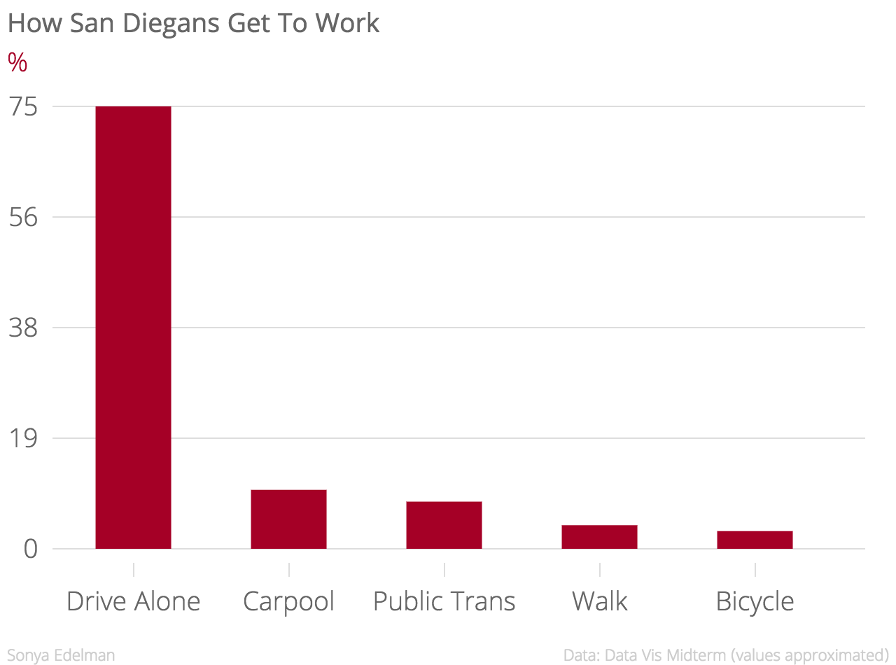
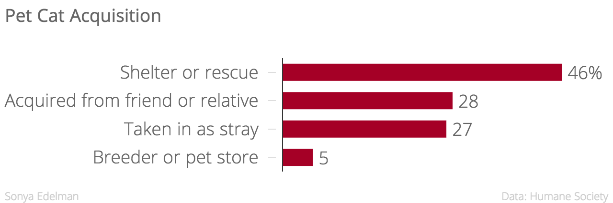
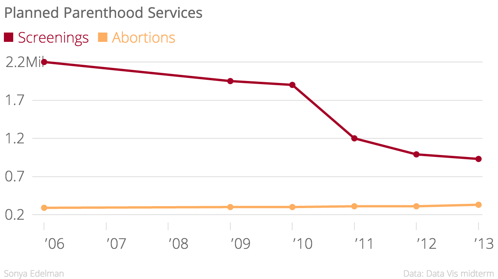
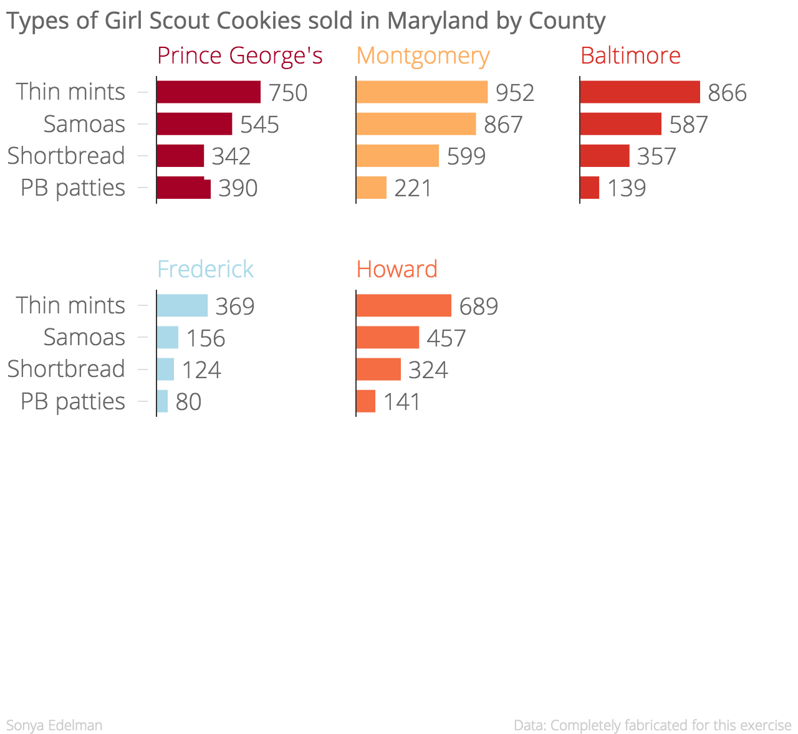
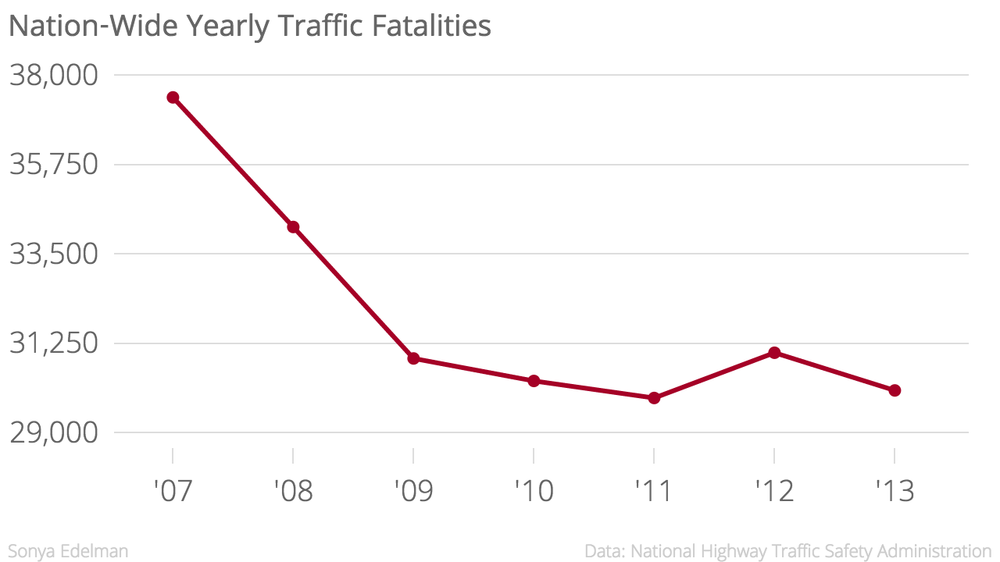
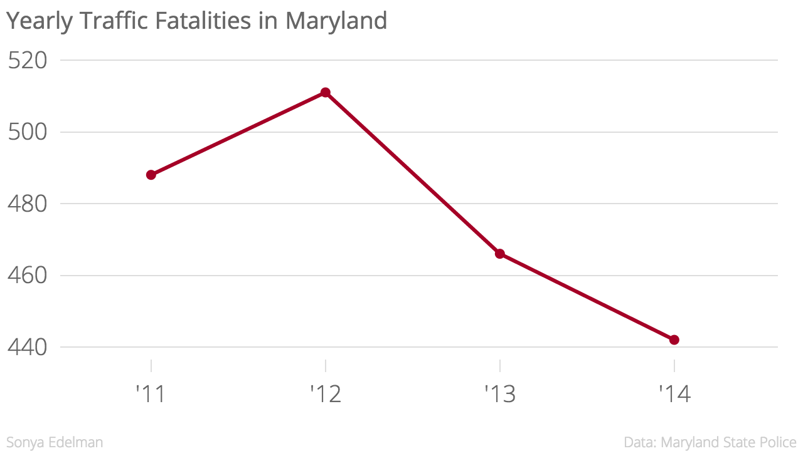

Sonya Edelman
Class 1 Chartbuilder




Class 2
Tableau Dahsboard
Chart alternate to map
Responsive chart
Class 3
7 Types of Data Stories - example of "Change Over Time"
Yearly Nation-Wide Traffic Fatalities 2007 - 2013

Yearly Traffic Fatalities in Maryland 2011 - 2014

Class 4 Class exercise
Syrian Refugees Viz
Class 5
Class 6